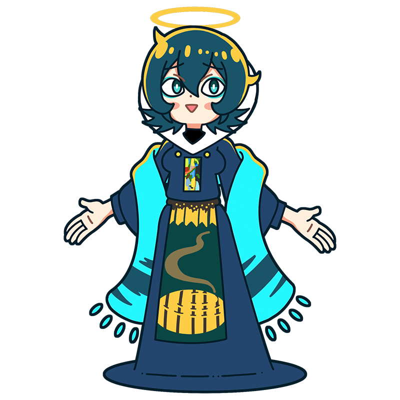
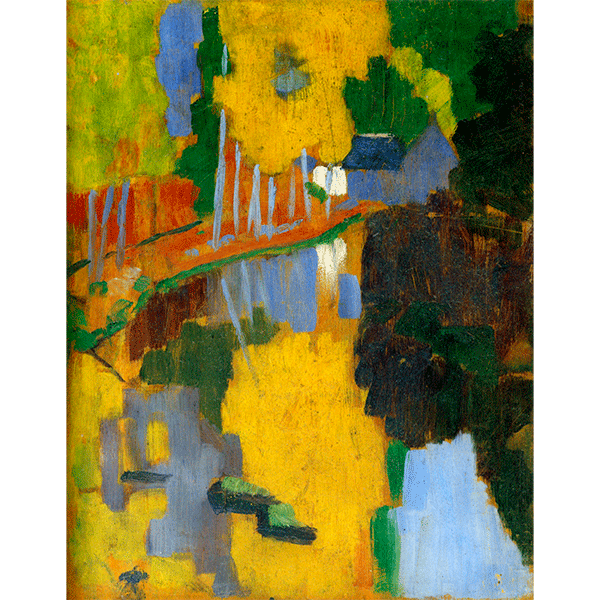
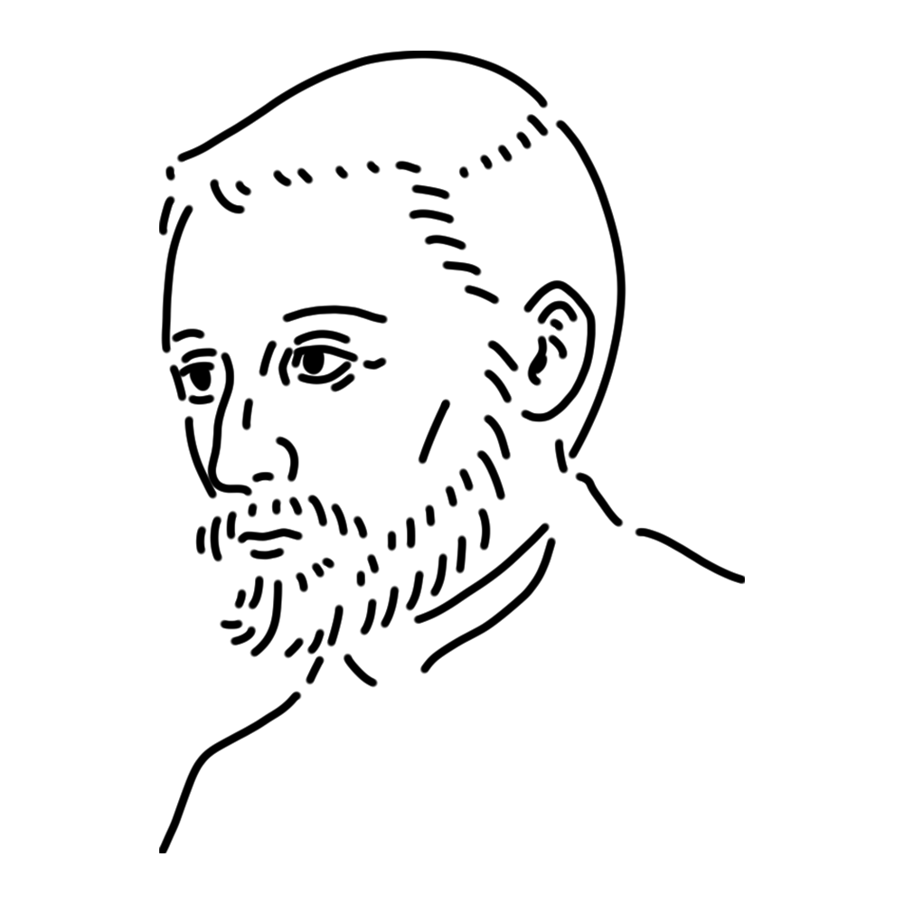

A muse who founded the Les Nabis, a French art group at the end of the 19th century. A mysterious muse who received a divine revelation and decided to lead the world of art with vivid colors, but her passion can sometimes make her a little too extreme.
France
"The Talisman(Landscape and trees in Pont-Aven)"
"The rain"
"Women at the Spring" etc.

This landscape painting was created by Sérusier based on the advice of Gauguin in Pont-Aven, a village in northwestern France. Sérusier and others were impressed by the artist's method of freely applying colors without being bound by the actual scenery, and formed a group called the "Les Nabis." This painting came to be known as a "talisman" that guided them.
Year
1888
Medium
Oil painting, board
Dimension
27 cm x 21.5 cm
Collection
Musée d'Orsay (France)

Born in France, he was a central figure in the Nabis group of artists. His painting “The Talisman,” created under Gauguin's guidance, became the spiritual pillar of the Nabis movement. He excelled at creating mystical landscapes using flat, flat colors, leaving behind numerous paintings of working women and forests. At the same time, he possessed an intellectual side, teaching at the Academy and writing theoretical treatises. Influenced not only by Gauguin but also by Moreau and Redon, he created a painting in memory of Redon upon the latter's death.
Paul Sérusier
November 9, 1864
October 7, 1927(aged 62)